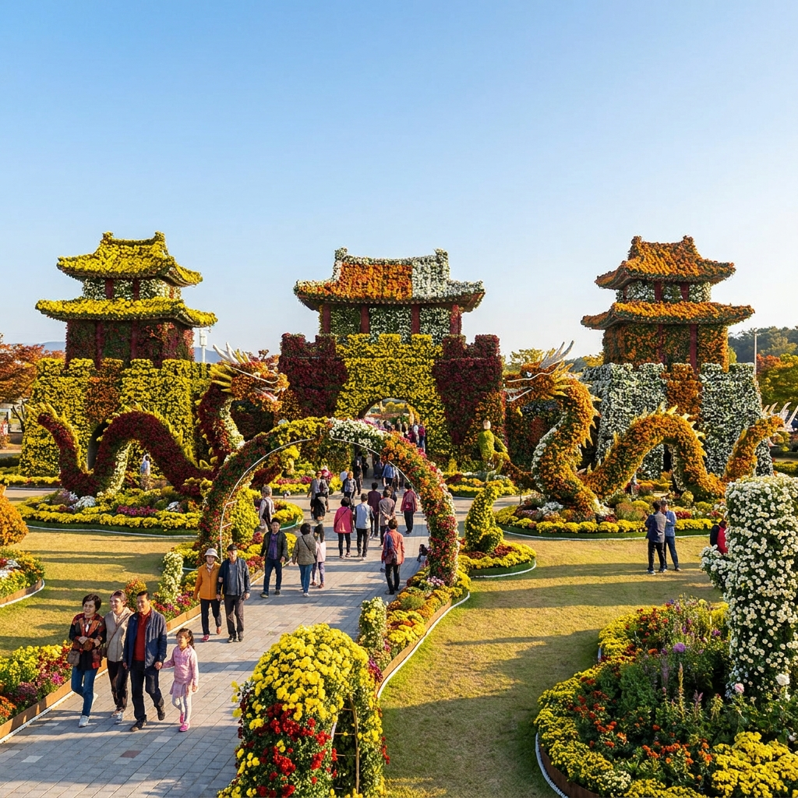
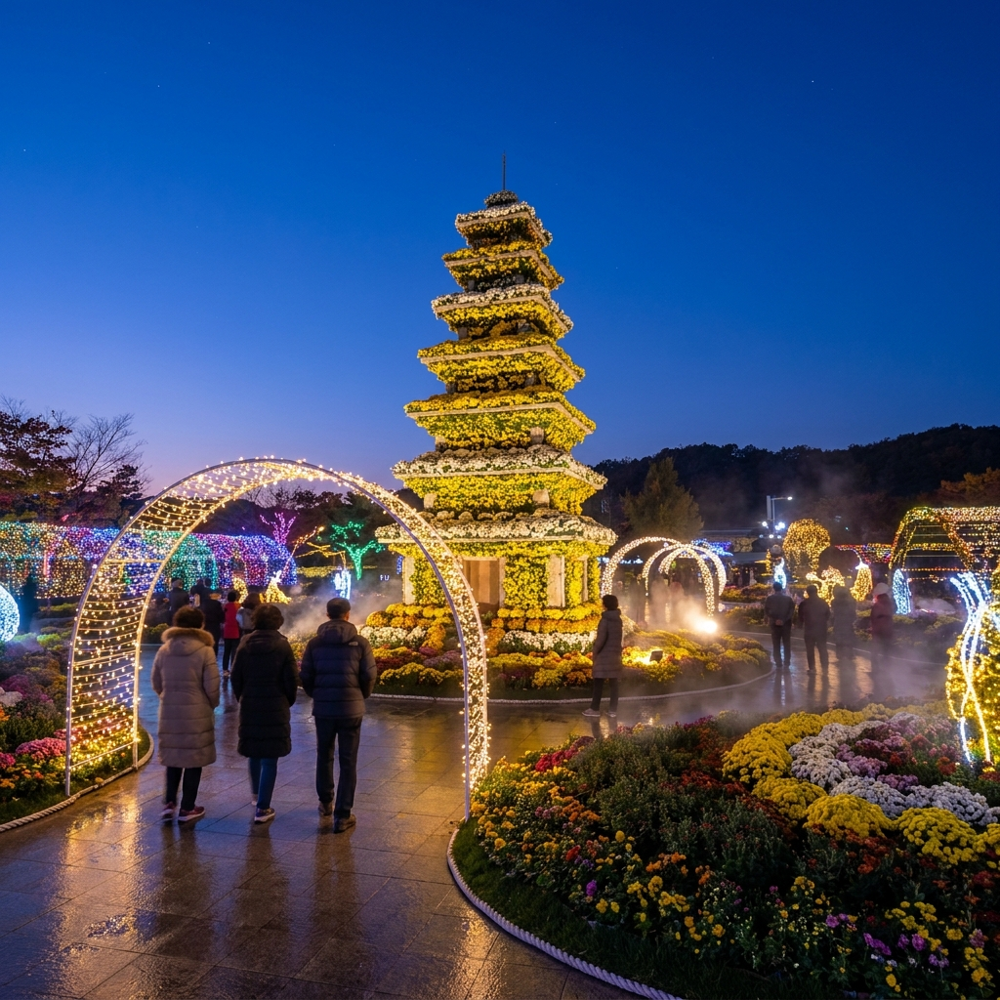
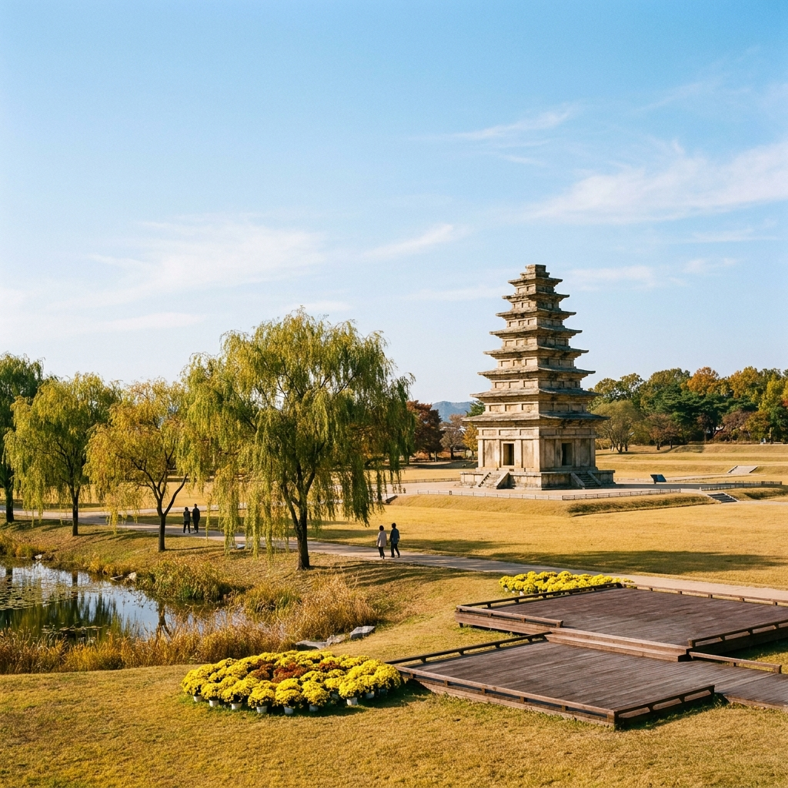

익산 천만송이 국화축제 2026 일정과 관람 코스 — 중앙체육공원 주차장 팁과 미륵사지 연계 동선
2026년 제23회 익산 천만송이 국화축제는 10월 23일(금)부터 11월 1일(일)까지 열흘간 익산 중앙체육공원 일원에서 화려하게 펼쳐집니다.
축제장 입장은 기본적으로 무료이며, 메인 전시장인 중앙체육공원에서 1천만 송이 국화 조형물과 야간 조명을 감상한 뒤 유네스코 세계유산인 미륵사지 석탑과 국립익산박물관으로 이어지는 차량 15분 동선이 가장 효율적인 가을 당일치기 코스입니다.
주말 방문 시 중앙체육공원 주차장이 오전 10시 전후로 만차되므로, 익산종합운동장 임시주차장에 주차 후 15분 간격으로 운행하는 무료 셔틀버스를 이용하는 것이 정체를 피하는 핵심 비결입니다.

중앙체육공원 입구의 웅장한 국화 조형물과 형형색색의 국화 정원 / AI 제작 이미지
01 | 2026 익산 천만송이 국화축제 개최 일정과 핵심 개요
가을의 정취를 오감으로 만끽할 수 있는 호남 최고의 가을 꽃 잔치, 제23회 익산 천만송이 국화축제가 2026년 10월 23일 공식 개막합니다.
익산시는 찬란했던 백제 무왕의 역사가 살아 숨 쉬는 고도(古都)이자 전국 최대 규모의 국화 생산지로 꼽히며, 매년 가을 도심 속 공원을 거대한 향기 정원으로 탈바꿈시킵니다.
올해 축제는 "GLOW IKSAN, 보석처럼 새롭게 빛나는 익산"을 슬로건으로 내걸고, 낮에는 수천만 송이 오색 국화의 향연을, 밤에는 첨단 경관 조명과 미디어 파사드가 어우러진 빛의 축제를 선보입니다.
단순한 화훼 전시를 넘어 전국 분재 경진대회, 농특산물 로컬푸드 마켓, 버스킹 공연 등 다채로운 프로그램이 열흘 동안 쉬지 않고 이어져 가족 및 연인 나들이객의 발길을 사로잡습니다.
02 | 축제 주무대 중앙체육공원 주요 전시 구역과 관람 동선
익산 천만송이 국화축제의 핵심 무대는 영등동에 위치한 중앙체육공원(익산시 하나로 322)입니다.
공원 전체가 테마별 정원으로 나뉘어 조성되어 있으므로 사전에 이동 동선을 숙지하고 둘러보시는 것이 체력 안배에 유리합니다.
추천 관람 동선은 정문 환영마당 → 특별전시장(백제왕궁 테마존) → 국화분재관 → 음악분수대 수변산책로 → 먹거리 및 특산물 장터 순서입니다.
| 전시 구역 |
주요 전시 및 테마 내용 |
권장 소요 시간 |
| 환영마당 (정문) |
초대형 국화 아치 게이트, 상징 캐릭터 마룡이 국화 포토존 |
약 15분 |
| 백제왕궁 국화 테마존 |
미륵사지 석탑 실물 크기 국화 모형, 백제 무왕과 선화공주 스토리 정원 |
약 35분 |
| 실내 분재 경진대회관 |
전국 국화 명인들의 300여 점 정교한 목부작, 석부작 분재 출품작 |
약 25분 |
| 음악분수 수변광장 |
호수 위 국화 플로팅 조형물, 야간 레이저 분수쇼 관람 명당 |
약 20분 |
| 보석꽃 힐링존 |
익산 귀금속 보석을 형상화한 다채로운 다륜대작(한 줄기 수백 송이) |
약 25분 |
천천히 사진을 찍으며 둘러보시면 중앙체육공원 구역만 감상하는 데에도 약 2시간 안팎이 소요됩니다.
03 | 입장료 무료 혜택과 특별전시장 관람 팁
많은 분들이 궁금해하시는 입장료는 중앙체육공원 야외 행사장 전 구역이 전면 무료로 개방됩니다.
일부 지자체 축제가 외지인에게 비싼 입장료를 부과하는 것과 달리, 익산시는 가을 축제의 문턱을 대폭 낮추어 누구나 부담 없이 꽃의 향연을 즐길 수 있도록 배려했습니다.
다만 매년 운영되는 '특별전시장(실내 희귀 국화관 및 분재 명품관)'의 경우, 쾌적한 관람 환경 유지와 화훼 농가 상생을 위해 소정의 특별관람권(약 3,000원 상당)을 운영할 수 있습니다.
이때 지불한 금액은 전액 현장에서 사용 가능한 익산 로컬푸드 쿠폰이나 지역사랑상품권으로 100% 전액 환급되므로 실질적인 관람료는 0원인 셈입니다.
환급받은 쿠폰으로는 축제장 내 농산물 부스에서 신선한 익산 탑마루 고구마, 배, 국화차 등을 알뜰하게 구매하실 수 있습니다.

야간 조명으로 빛나는 미륵사지 석탑 국화 조형물과 불빛 터널 / AI 제작 이미지
04 | 야간 빛 조형물 점등 시간과 인생샷 포토존 베스트
익산 천만송이 국화축제는 해가 진 뒤 방문했을 때 또 다른 매력을 뽐냅니다.
매일 일몰 시각에 맞춰 오후 18시부터 21시 30분까지 공원 전역의 경관 조명이 일제히 불을 밝히며 환상적인 빛의 정원을 연출합니다.
낮 시간대의 화사한 자연광 사진도 훌륭하지만, 화려한 LED 조명과 국화 꽃잎이 어우러지는 야경은 로맨틱한 분위기를 극대화합니다.
📸 실패 없는 국화축제 인생샷 포토스팟 3곳
1. 백제 무왕 국화 석탑 앞: 중앙 분수대 광장에 설치된 거대한 국화 탑 정면에서 조명을 역광으로 받으며 촬영하면 화려한 실루엣이 완성됩니다.
2. 국화 터널 길: 수천 송이 노란 소국이 천장까지 뒤덮은 꽃 터널 중앙에서 한 걸음 물러나 망원 앵글로 담으면 동화 속 한 장면 같은 분위기를 연출할 수 있습니다.
3. 음악분수 호수 데크: 호수에 비친 국화 조형물의 반영과 분수쇼 조명을 한 프레임에 담을 수 있는 저녁 시간 최고의 핫플레이스입니다.
05 | 중앙체육공원 임시 주차장 위치와 주말 무료 셔틀버스 운행 정보
축제 기간 주말에는 전국 각지에서 수만 명의 인파가 몰려 중앙체육공원 진입로와 주변 주차장이 극심한 혼잡을 빚습니다.
중앙체육공원 지하 및 지상 주차면수는 약 450대에 불과하므로, 주말 오전 10시 이후 도착하신다면 처음부터 외곽 임시 주차장으로 향하시는 것이 시간을 아끼는 지름길입니다.
| 주차장 구분 |
위치 및 내비게이션 검색어 |
주차 면수 |
축제장 이동 수단 |
| 제1공영주차장 |
중앙체육공원 테니스장 뒤편 |
약 450대 |
도보 3분 (주말 10시 이전 만차) |
| 임시 A주차장 |
익산종합운동장 (무왕로 1397) |
약 1,200대 |
무료 셔틀버스 15분 간격 운행 (5분 소요) |
| 임시 B주차장 |
익산시청 제2청사 및 팔봉공영주차장 |
약 600대 |
무료 셔틀버스 연계 운행 |
| 대중교통 이용 |
익산역(KTX·SRT) 광장 버스승강장 |
— |
순환 시내버스 100번, 108번 탑승 (약 20분) |
⚠️ 주차 팁 안내: 익산종합운동장 주차장은 공간이 매우 넓고 진출입이 수월하여 주말 스트레스 없이 주차하실 수 있습니다. 축제 전용 셔틀버스는 오전 9시 30분부터 오후 21시 30분까지 주말 동안 10~15분 간격으로 무료 왕복 운행됩니다.
06 | 축제장에서 미륵사지까지 이동 경로와 당일치기 연계 코스
국화축제장만 둘러보고 돌아가기 아쉽다면, 익산의 대표적인 랜드마크인 미륵사지(彌勒寺址)를 함께 묶어 당일치기 여행을 완성해 보세요.
중앙체육공원에서 미륵사지까지는 하나로 도로를 따라 북쪽으로 약 9.5km, 차량으로 15분에서 20분이면 도착하는 매우 가까운 거리입니다.
특히 가을철 미륵사지 일원에도 소규모 국화 포토존과 갈대밭이 조성되어 축제장과는 또 다른 고즈넉한 정취를 선물합니다.
🚗 당일치기 익산 가을 나들이 추천 타임라인
• 10:00 ~ 12:30: 중앙체육공원 도착, 천만송이 국화정원 관람 및 분재 전시 감상
• 12:30 ~ 13:40: 축제장 먹거리 장터 또는 인근 황등면으로 이동하여 황등육회비빔밥 점심 식사
• 14:00 ~ 16:30: 익산 미륵사지 석탑 산책 및 국립익산박물관 상설전시실 관람
• 16:40 ~ 17:30: 백제 무왕의 능으로 전해지는 익산 쌍릉 또는 왕궁리유적지 5층석탑 노을 감상
• 18:00 ~ 19:30: 다시 중앙체육공원으로 복귀하여 화려한 야간 국화 점등과 음악분수 야경 즐기기

익산 미륵사지 석탑 광장과 가을 하늘 아래 펼쳐진 고즈넉한 백제 유적 풍경 / AI 제작 이미지
07 | 미륵사지 국립익산박물관 어린이박물관 관람 및 주차 안내
미륵사지는 백제 무왕 때 창건된 동아시아 최대 규모의 사찰 터로, 국보 제11호인 미륵사지 석탑이 자리 잡고 있는 세계유산입니다.
20년에 걸친 끈질긴 해체 복원을 거쳐 단아한 본래의 모습을 되찾은 석탑 주변을 거닐면 1,400년 전 백제의 숨결이 고스란히 전해집니다.
사적지 내에 위치한 국립익산박물관은 유적의 경관을 훼손하지 않기 위해 지상 높이를 낮춘 국내 유일의 '지하 유적 밀착형 박물관'으로 설계되었습니다.
미륵사지 출토 사리장엄구 진품을 비롯해 눈부신 백제 금속공예의 정수를 관람하실 수 있으며, 관람료와 주차료 모두 무료입니다.
아이와 함께하는 여행이라면 인터랙티브 체험형 콘텐츠가 가득한 어린이박물관(사전 온라인 예약 권장)을 함께 둘러보시면 더욱 유익한 가족 나들이가 됩니다.
08 | 익산 가을 별미 먹거리 황등비빔밥과 육회비빔밥 맛집 거리
금강산도 식후경, 익산 여행에서 절대 빼놓을 수 없는 대표 향토음식은 바로 황등육회비빔밥입니다.
축제장에서 차로 약 10분 거리인 황등시장 일대에는 80~90년 전통을 자랑하는 유서 깊은 비빔밥 노포들이 모여 있습니다.
황등비빔밥은 일반 전주비빔밥과 달리 진한 사골 육수에 밥을 여러 번 토렴한 뒤 양념장과 콩나물을 미리 비벼서 놋그릇에 담아내는 것이 특징입니다.
그 위에 신선하고 부드러운 우둔살 육회와 선지국을 곁들여 내는데, 한 숟가락 뜨는 순간 고소하면서도 깊은 감칠맛이 입안 가득 퍼집니다.
육회를 못 드시는 분들을 위해 익힌 고기 비빔밥도 주문 가능하며, 가격대는 한 그릇당 1만 원에서 1만 3천 원 안팎으로 부담 없는 한 끼를 즐기실 수 있습니다.
09 | 익산 천만송이 국화축제 방문객 필수 체크리스트 & FAQ
방문 전 확인하시면 여행의 질이 한층 높아지는 핵심 체크리스트와 자주 묻는 질문들을 정리했습니다.
📋 국화축제 출발 전 최종 체크리스트
[ ] 편안한 운동화 착용: 중앙체육공원과 미륵사지를 합치면 하루 1만 보 이상 걷게 됩니다.
[ ] 얇은 겉옷 챙기기: 가을철 일몰 후 야간 조명을 감상할 때는 기온이 급격히 떨어집니다.
[ ] 카메라 배터리 및 스마트폰 저장공간 점검: 포토존이 워낙 방대하여 촬영량이 많습니다.
[ ] 온누리상품권 및 지역화폐 챙기기: 특산물 직거래 장터에서 추가 할인 혜택을 받을 수 있습니다.
❓ 자주 묻는 질문 FAQ
Q1. 반려동물 동반 입장이 가능한가요?
A1. 중앙체육공원 야외 공원 구역은 목줄과 배변봉투를 지참하시면 반려동물 동반 산책이 가능합니다. 단, 실내 분재 전시관 및 체험 부스 내부 출입은 제한될 수 있으니 유의하시기 바랍니다.
Q2. 휠체어나 유모차 대여가 되나요?
A2. 네, 중앙체육공원 축제 종합안내소에서 신분증을 제시하시면 유모차와 휠체어를 무료로 대여하실 수 있습니다. 공원 전 구역이 평지 무장애 데크로 연결되어 있어 이동이 매우 편리합니다.
Q3. 비가 오면 행사가 취소되나요?
A3. 우천 시에도 꽃 전시는 정상 운영됩니다. 다만 야외 문화예술 공연 및 버스킹 행사는 실내 시설로 변경되거나 일정이 일부 조정될 수 있습니다.
📌 함께 읽으면 좋은 가을 나들이·여행 실무 가이드
#익산국화축제
#천만송이국화축제
#중앙체육공원
#익산가볼만한곳
#미륵사지석탑
#국립익산박물관
#가을꽃축제
#황등비빔밥
#국화축제주차장
#전북가을여행